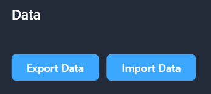
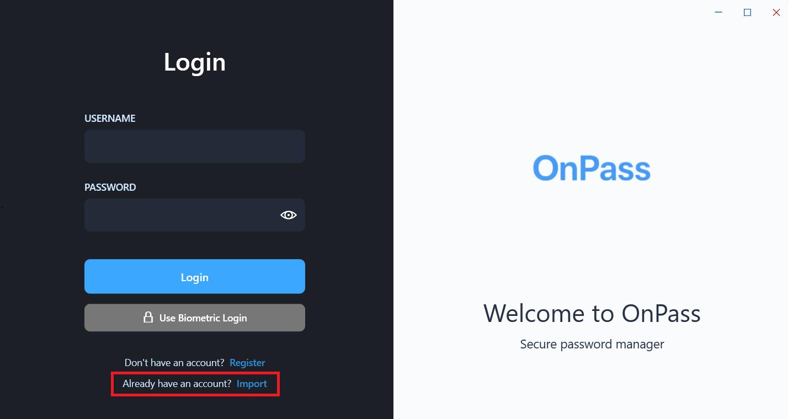

1. Export your user data
Export your user data to a location where you can easily find the files.

Export the user data securely, move the files yourself, and import them on the new PC.
Export your user data to a location where you can easily find the files.

Transfer the exported files to your other computer using your preferred method (USB drive, cloud storage, etc.).
Install or build the desktop app on the destination PC, then open the OnPass desktop application

Select the import user option and point OnPass to the exported files you transferred from the original machine.

Log in with the imported account credentials. Your data will now be available on your new PC!